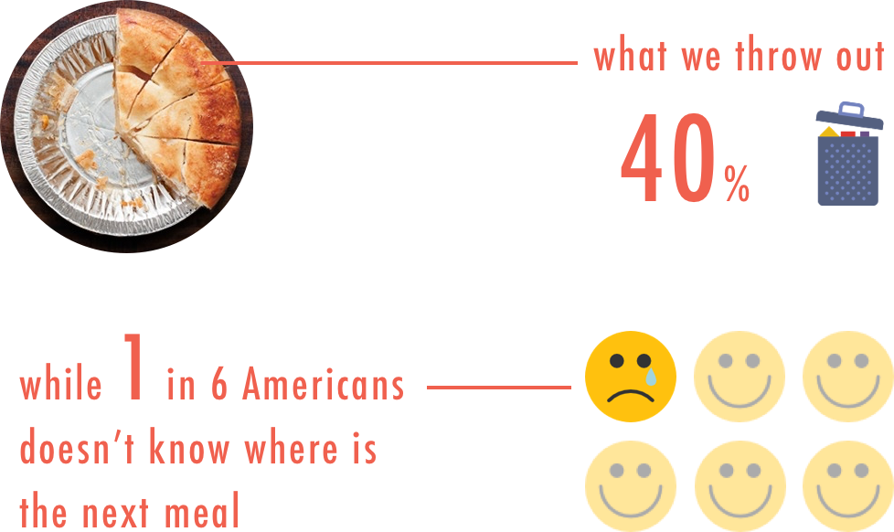
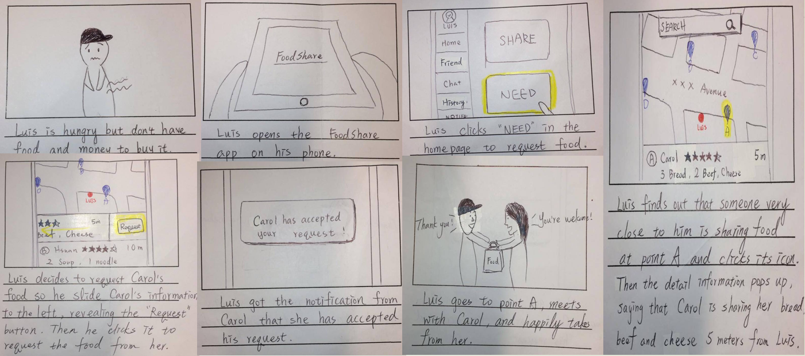
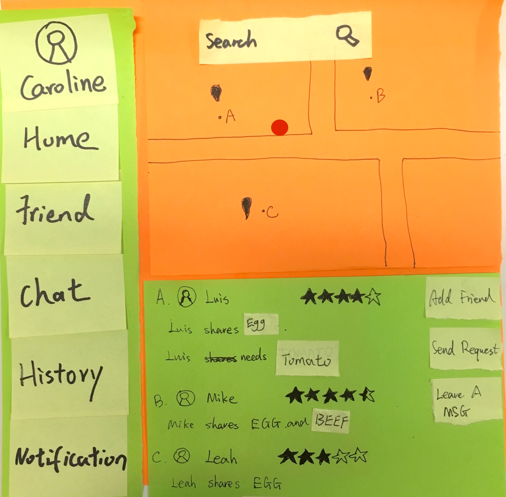

In this four-month project, we utilized an Agile-like, iterative approach in designing this product. As we advanced the fidelity of prototype from low to mid to high, we conducted user testing to evaluate its usability and continually improving it.
We were inspired by numerous issues happening around us in the real world. Among them, food waste is the most urgent and significant one that we want to design a solution for.

To make sure that this issue is significant and to gain realistic understanding of it, we interviewed 15 people in a local soup kitchen, people who need food for their next meal. We found that these potential users have four major needs:
1. Access to available, surplus, and free food
2. Food Donation from restaurant and supermarkets
3. Have healthier food options
4. Connect with others and make friends
In order to deal with the food waste issue, we prioritized users’ needs and identify one primary persona, as well his goals. Each member worked independently to brain storm 20 designs that address the persona’s goals. Then, we integrate some of the best ideas together and developed the basic frame of FoodShare: redistributing the surplus food resource.
Mobile Device
Some might think that potential food requesters would not have a mobile phone, or they can't afford one. However, in our researches and field investigation, more than 60% of people living under the poverty line own functioning mobile phones. According to our interviews, mobile phones are more than a way to communicate with others for them. It means security and the ability to reach out in emergencies. All of the interviewers we encountered in this project own a functioning, smart, mobile phone. Nonetheless, we plan to put stationary tablets in public spaces, such as bus stops, churches, and community centers, for people who don't have a mobile phone to use FoodShare.
We developed numerous storyboards to visualize the idea and how users would interact with it to achieve their goals. We decided to design FoodShare as a mobile application, because almost everyone have cellphones nowadays and it maximizes the points of connection with people.


We designed a series of paper prototypes which address the four user goals found in field investigation. This paper prototype is the low-fidelity prototype we used in the following user testing. Paper prototype is easy to create and iterate, which is suitable for early design cycle.
-
Login or sign up to begin
-
Homepage with side menu and two buttons - Share and Need
-

Clicked need, users see a map and a list of shared food nearby, with search function.
-
Clicked request, users can chat with the food sharer to discuss where and when to take the food.
-
Users chat with the food sharer and click confirm after they settle up.
-
Clicked share on homepage, users can fill in the information about the food, including name, quantity, and category.
-

After sharing the food, sharers will receive message and notification if someone requests the food.
-

Notification Page - Users can check their notification here
-

Friend Page - Users can see the list of their friends here.
-

Chat Page - Users can use and manage their chats here.
User testing

We interviewed 5 target users and 5 college students to test our paper prototypes. We gained some critical feedbacks and iterated our design based on them. Here are our three major findings:
1. The History is confusing. Users think it's similar to chat and notification.
2. The request process is too complicated. Users didn't know they should chat with the sharer before clicking the confirm button.
3. No feedback after users shared some food. Users weren't not sure whether they have successfully shared it or not.
4. How should we make sure the food they are sharing is in good condition?
Among these, we think the third finding is the biggest question we are facing. In fact, it's the question we have been considering in the beginning of this project.
"How should we make sure that sharers are sharing food in good condition and protect requesters from eating spoiled food? "
To answer this question, we design a guideline for food sharers to tell the condition of their food and whether it's eatable or not before they share it. Aside from this preventive guideline, we design a rating and reporting mechanism: users can rate the food sharer after an exchange. If the rating of a certain food sharer is significantly low, the system will ban him from sharing food in the future. In addition, if someone intentionally shared a spoiled or even poison food, requesters can directly report it to the system. Legal action will be taken against the food sharer. Although these designs might not stop all the people who deliberately share spoiled food, we think they can lower the rate. Most important of all, the benefit of sharing food will justify the possible disadvantage.
After the iteration from paper prototype, we built the interactive, mid-fidelity prototype by Balsamiq. With it, we can conduct future user testing with digital devices and provide a more realistic experience than paper prototypes.
Request Food
-
Request Food: Step 1
View a map and a list of shared food nearby
-
Request Food: Step 2
Select an item and send request
-
Request Food: Step 3
Confirm to pick up at the preferred location
-
Request Food: Step 4
Confirmed the request
Share food
-
Share Food: Step 1
Enter the information about the item
name, category, quantity, and quality
-
Share Food: Step 2
Basket function allows users to share multiple items at once.
-
Share Food: Step 3Shared successfully and the sharer can choose a preferred pick up location
To iterate from previous prototype, we conducted a user testing and improve the design accordingly. We used Sketch to design the high-fidelity user interface and made it interaction with InVision. With InVision, we can export the interfaces onto mobile phones and provide the most realistic experience to users. We put our attention on the visual design in this step.
Request food
1. The homepage contains more information, including the sharing item, requested item, and the notification of any new activities.
2. When requesting food, users can also see what establishments are sharing their food, such as supermarkets and restaurants.
Share food
1. When users are sharing food, they only need to input the name, description, and categories. Also, they can add photos, which will better help to specify the quantity and quality of the food. We remind the users to only share fresh and edible food here.
2. If the user is the owner of an establishment, he / she can share in business mode, where they don't have to input basic information.
3. Instant feedback of successful sharing is provided to users.
Rating Function
Users can give each other a rating after sharing an item with one another, as one "Foodshare". The rating can help others to consider when they are deciding whether or not to request a certain user's food.
We went back to the local soup kitchen for final test and interviewed 10 users. Most of the feedbacks we got were positive. The users would love to see this application been available on mobile phones and believe that foodShare can really mitigate the issue of food waste in US.
I have the opportunity to solve a real world issue and design for the people who I wouldn't have encounter. The iterative design process improves the product step by step and really hones my ability in user experience design. I love this project because, to me, user experience design is a commitment to develop products with purpose, compassion, and integrity.